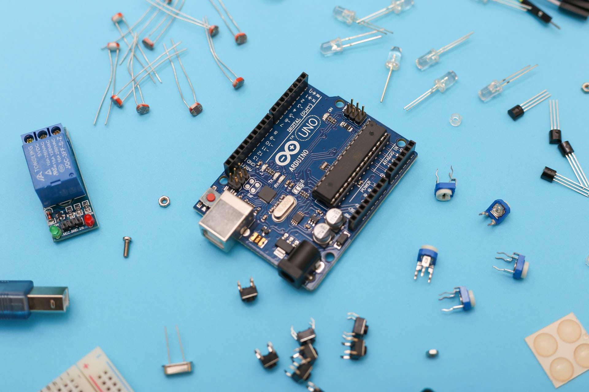

Mata Kuliah
Kami pernah belajar banyak mata kuliah, antara lain:
Dasar Algoritma dan Pemrograman & Struktur Data dengan menggunakan bahasa C++

Fisika membuat projek dengan menggunakan Arduino

belajar dasar html dan membuat website di mata kuliah Pemrograman Web
Kalkulus 1, Kalkulus 2 dan Aljabar Linear yang membahas tentang integral, turunan, dan sistem persamaan linear
Jaringan Komputer yang membahas tentang pembuatan rancangan jaringan dengan menggunakan Cisco Packet Tracer